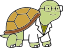

SCIENCE MADE EASY / TOOLS
Load a sequence to see its map and features.
Find a gene, a cluster or a plasmid by name. Results show their length, so you can tell a 10 kb cluster from a 5 Mb genome.
Pulls just those genes out of a large record, with the upstream region so the promoter comes along. Leave blank to take the whole record.
Primers are matched by their 3' end, so 5' tails that add restriction sites are fine.
Cuts are scored on both strands. Off-target hits with up to 3 mismatches are reported.
Mix two tubes with ligase. Everything in them reacts, so expect a mixture of products.
Resistance and lacZα are read from each product's own sequence, so selection and blue/white are computed, not assumed.
Write the steps, run them, read the gel. One instruction per line; whatever follows as names the tube.
as
Tick a sample to load it into a lane. Click a name to show it in the map.
Nothing on the bench yet.
No reactions yet.